J' avais dans ma caisse à rabiot un robot chien cassé qu' un ami éboueur m' avait ramené ( c' est lui qui me permet d' avoir en grande partie de la matière )
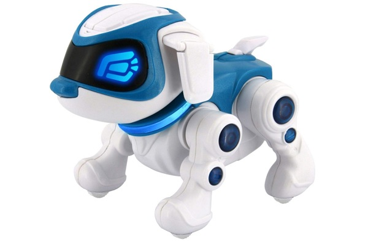
Je le démonte donc et récupère le corps principal faits de deux parties que je colle, ça sera le tronc de mon robot
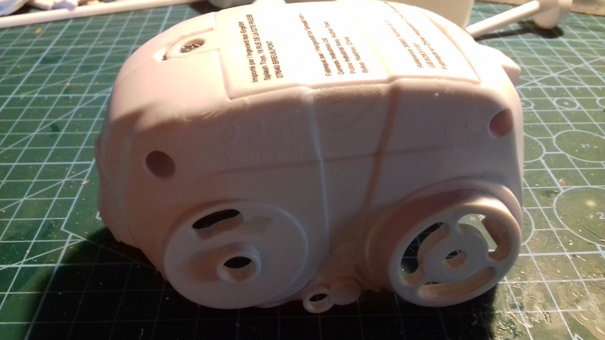
Je prends la partie plastique d' un autre jouet ( je sais même plus d' où ça vient ) qui sera le cou et la poitrine et la colle sur le ventre Pour le dos, une partie plastique provenant d' une cafetière...
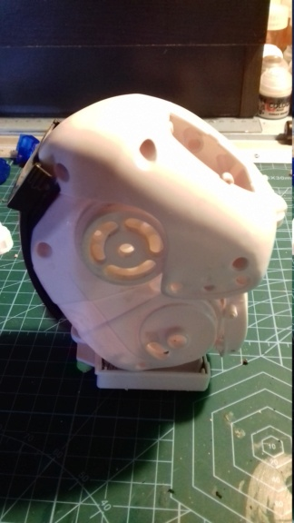
Je fixe différent éléments au niveau du cou et prend le haut de la tête du chien qui fera l' abdomen
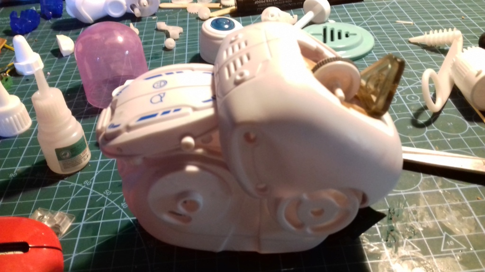
Je désosse une souris et récupère la partie haute, j' y perce deux trous qui seront les yeux
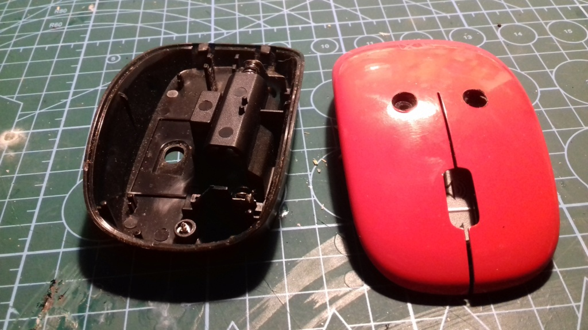
Je fixe un petite flotteur de pompe auquel je lime les arrivées, il fera le cerveau et relie des câbles aux divers trous ainsi qu' une plaque devant l' orifice pour la bouche...
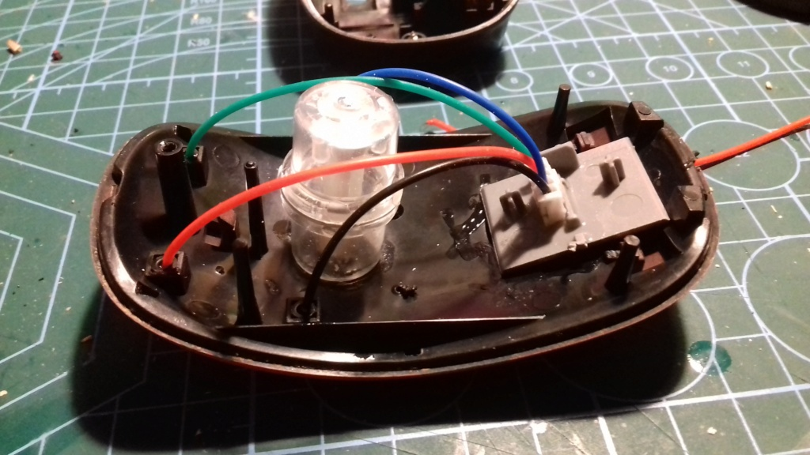
Je prend divers éléments d' un vieux lecteur cassette pour faire le cou
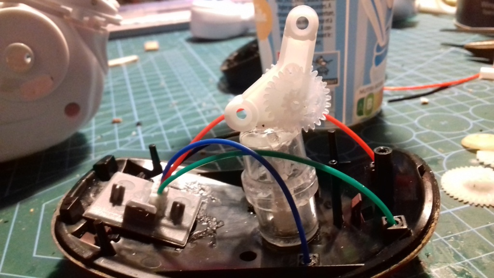
Je colle la tête au corps en ajoutant par la même des engrenages
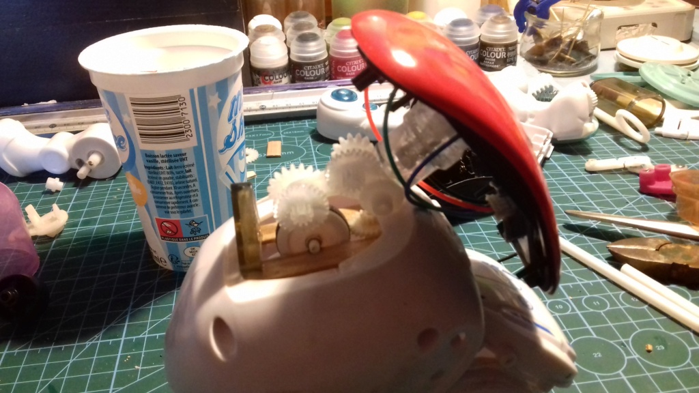
Place au jambes qui sont celles d' un autre robot cassé, j' y rajoute deux bâtons de glace pour faire les cuisses et divers accessoires pour faire les genoux
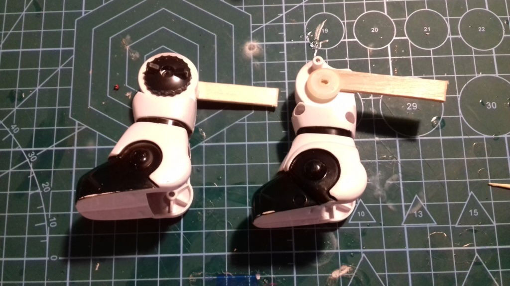
Au bout des bâtons je colle deux engrenage en bois
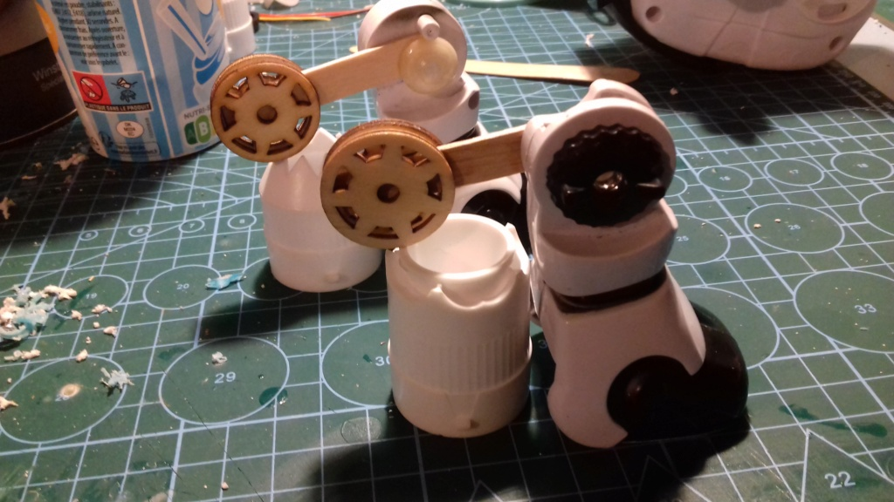
Puis les colle au corps, je recouvre les engrenages de deux demi-sphère provenant du corps du chien. Et rajoute du câblage au niveau du cou...
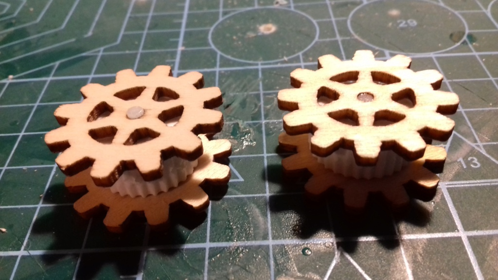
Maintenant les coudes avec d' autres engrenages en bois et les roues du robot-chien.
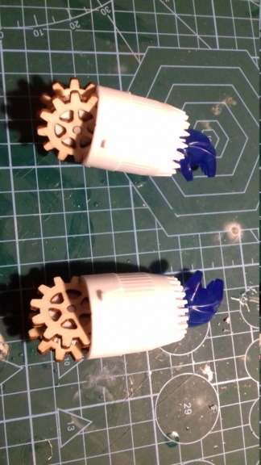
Les avants bras faits avec des buses à pâtisseries ( acheté en magasin d' occas... 50c le lot ). Je colle les engrenages aux buses puis fixe les mains provenant du robot de la maquette précédente...
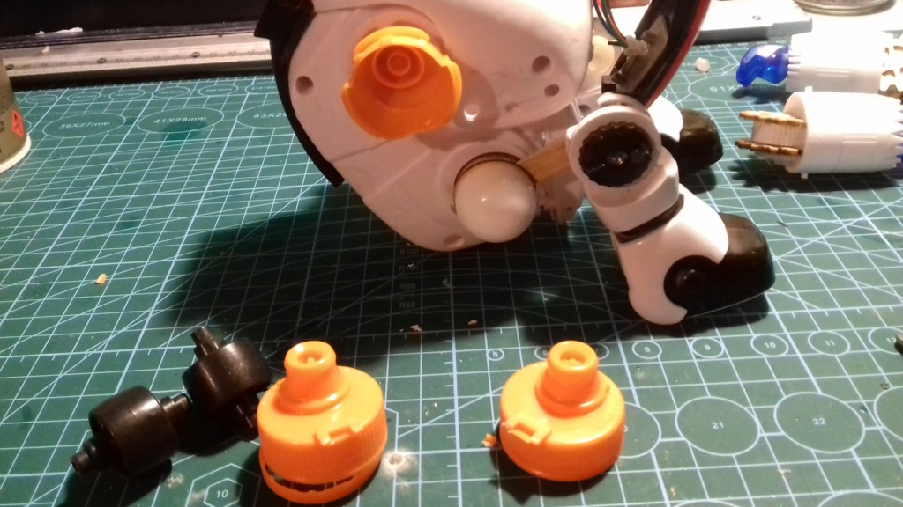
Bon, j' ai retiré ce qui faisait les épaules, les deux roulements noirs, ça faisait beaucoup trop large et pas esthétique. A la place, j' ai découpé des bouchons de boissons lactées et récupéré la partie inférieure qui s' insère mieux...
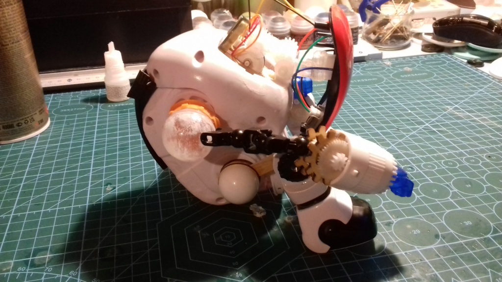
J' avais dans mon stock des boules de plexiglas que je colle à l' intérieur des parties de bouchons. Ça donne plus de réalisme pour imaginer le mouvement des bras. Je récupère sur un vieux robot jouet des articulations qui feront offices de bras et viens y fixer les avants bras ! Puis colle l' ensemble aux boules... Et là... C' est une galère sans nom pour que ces p#@!#? de bras tiennent !!! Un coup un bout tient mais l' autre lâche et vice-versa...
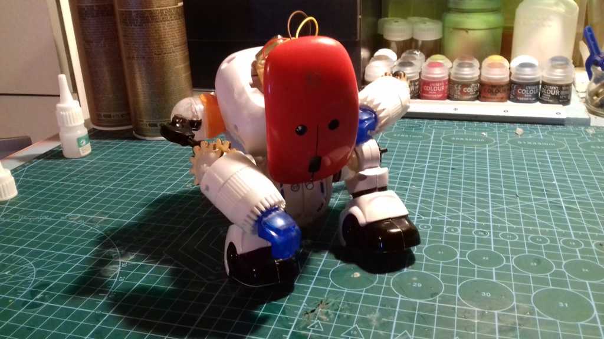
Mais j' y arrive tant bien que mal et le résultat est pas mal...
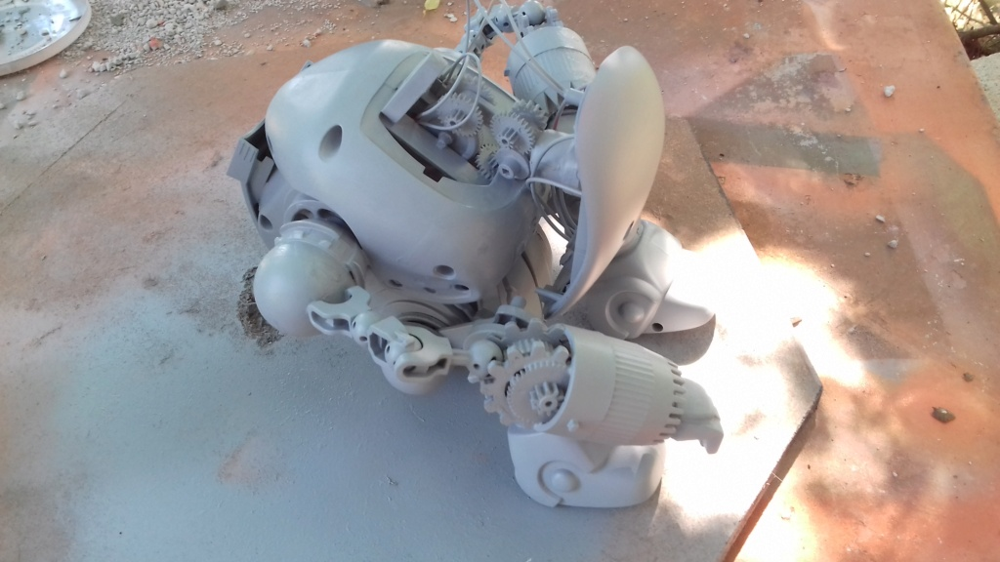
ponçage et une couche d' apprêt
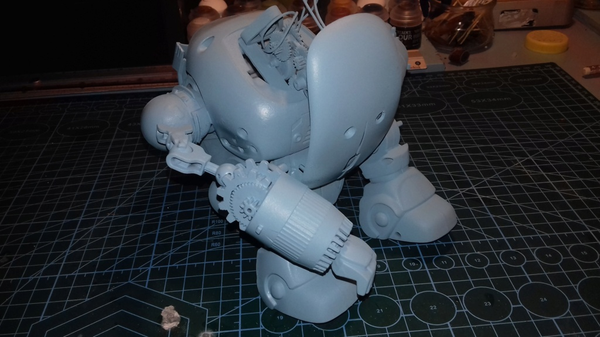
Suivi de deux couches de bleu Himalaya
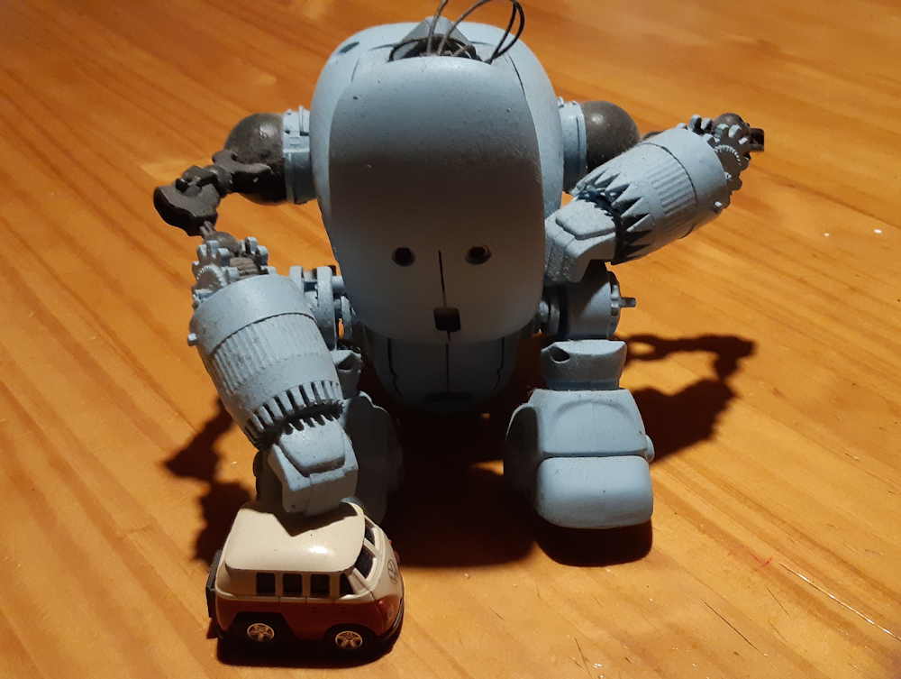